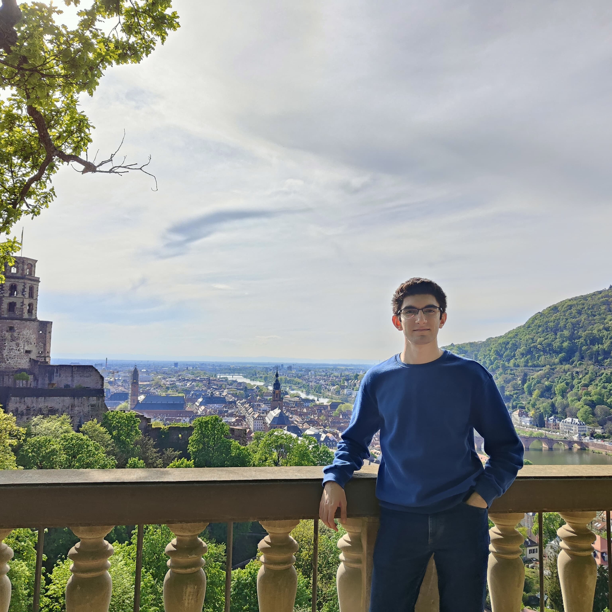

About Me
Programming Enthusiast
A proactive computer scientist who graduated from BSc Computer Science at Saarland University in March 2026 and started the MSc Data Engineering and Analytics program at TUM. Currently working at SAP as a working student in Translation Project Coordination. Was previously in BSc Computer Engineering at İhsan Doğramacı Bilkent University.
Has strong academic achievement, was in the High Honour Roll and the Honour Roll back in İhsan Doğramacı Bilkent University, and programming experience with a strong algorithm-programming background. Possesses strong leadership and communication skills with fluency in English and advanced German.
Keen to pursue a career in Computer Science as an AI specialist, a Data Scientist or a Machine Learning specialist.